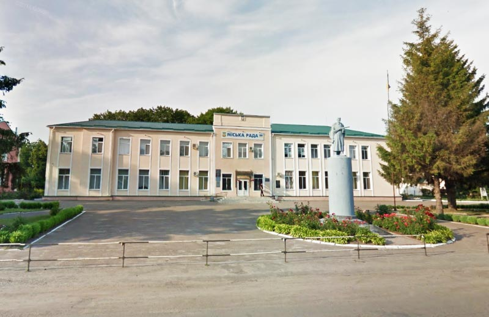

Моя Батьківщина
Ласкаво просимо на сторінку про мою Батьківщину, місьо Карлівка, Полтавської області! Тут ви можете побачити кілька фото та дізнатися більше про це чудове місце.

Головна площа

Річка в моєму місті